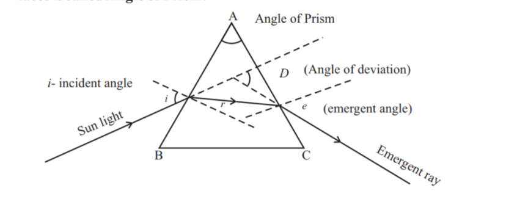
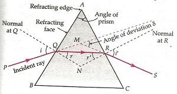
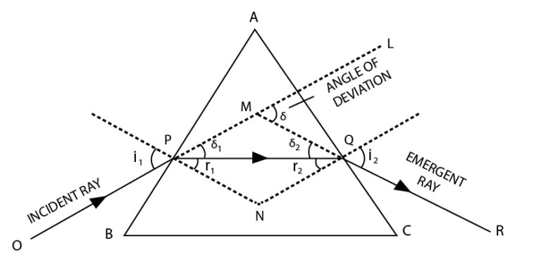

📘 Unit 6(C) - प्रिज्म
प्रश्न: प्रिज्म किसे कहते हैं?
प्रिज्म समरूप पारदर्शी माध्यम का एक भाग है, जो किसी भी कोण पर झुकी हुई दो समतल सतहों से घिरा होता है।
प्रश्न: प्रिज्म से प्रकाश के अपवर्तन को सचित्र समझाइए। (प्रश्न बैंक)
अथवा प्रिज्म से प्रकाश के अपवर्तन का नामांकित चित्र बनाइए।
अथवा प्रिज्म से प्रकाश के अपवर्तन का नामांकित चित्र बनाइए।


PQ = आपतित किरण
QR = अपवर्तित किरण
RS = निर्गत किरण
ND/MD = अभिलम्ब
\(i\) = आपतन कोण
\(r_1/r_2\) = अपवर्तन कोण
\(e\) = निर्गत कोण
\(d\) = विचलन कोण
माना कि प्रिज्म ABC के एक अपवर्तन फलक AB के Q बिन्दु पर प्रकाश किरण PQ अभिलम्ब ND से आपतन कोण \(i\) बनाते हुए आपतित होती है और अभिलम्ब की ओर मुड़ते हुए अपवर्तन कोण \(r_1\) बनाकर गमन करती है।
यह किरण प्रिज्म के दूसरे अवयवी तल AC के R बिन्दु पर अभिलम्ब MD से आपतन कोण \(r_2\) बनाते हुए आपतित होती है और अभिलम्ब से दूर हटते हुये निर्गत कोण बनाते हुए RS दिशा में निकल जाती है।
प्रश्न: प्रिज्म का विचलन कोण किसे कहते हैं? (प्रश्न बैंक)
आपतित किरण व निर्गत किरण के बीच बनने वाला कोण विचलन कोण कहलाता है। इसे \(d\) से व्यक्त करते हैं।
प्रश्न: विचलन कोण किन कारकों पर निर्भर करता है?
विचलन कोण निम्न कारकों पर निर्भर करता है—
- आपतन कोण पर
- प्रिज्म के पदार्थ पर
- प्रकाश की तरंगदैर्घ्य पर
- प्रिज्म के कोण पर
प्रश्न: न्यूनतम विचलन कोण क्या है?
प्रारंभ में जैसे-जैसे आपतन कोण का मान बढ़ाया जाता है वैसे-वैसे विचलन कोण का मान कम होने लगता है। आपतन कोण के एक विशेष मान के लिए विचलन कोण का मान न्यूनतम होता है। उसके बाद आपतन कोण के मान को और बढ़ाने पर विचलन कोण का मान कम होने के बजाय बढ़ने लगता है। विचलन कोण के इस न्यूनतम मान को ही न्यूनतम विचलन कोण कहते हैं। इसे \(d_m\) से व्यक्त करते हैं।

प्रश्न: न्यूनतम विचलन की शर्तें लिखिए।
न्यूनतम विचलन की स्थिति में —
- आपतन कोण व निर्गत कोण बराबर होते हैं। अर्थात \(i = r\)
- अपवर्तित किरण आधार के समानांतर होती है।
- दोनों अपवर्तित कोण बराबर होते हैं। अर्थात \(r_1 = r_2\)
प्रश्न: न्यूनतम विचलन कोण किन-किन कारकों पर निर्भर करता है?
न्यूनतम विचलन कोण निम्न कारकों पर निर्भर करता है—
- प्रकाश के रंग पर - बैंगनी रंग के लिए न्यूनतम विचलन कोण का मान सर्वाधिक एवं लाल रंग के लिए न्यूनतम होता है।
- प्रिज्म के पदार्थ पर - प्रिज्म के पदार्थ का अपवर्तनांक अधिक होने पर न्यूनतम विचलन कोण का मान अधिक होता है।
- प्रिज्म के कोण पर - प्रिज्म का कोण अधिक होने पर न्यूनतम विचलन कोण का मान अधिक होता है।
प्रश्न: प्रिज्म के पदार्थ के अपवर्तनांक का सूत्र निगमित कीजिए। (2025)
Question: Derive the formula for the refractive index of the material of the prism. (2025)
Question: Derive the formula for the refractive index of the material of the prism. (2025)
Prove that the refractive index of the prism is:
एक त्रिकोणीय काँच के प्रिज्म ABC के फेस AB पर पड़ने वाली एक मोनोक्रोमैटिक प्रकाश किरण OP पर विचार करें।
जब प्रिज्म को मिनिमम डेविएशन (न्यूनतम विचलन) की स्थिति में रखा जाता है, तो प्रकाश की किरण प्रिज्म से सिमेट्रिकली (सममित रूप से) गुजरती है। इस विशेष स्थिति में—
विचलन कोण न्यूनतम हो जाता है, यानी \(\delta = \delta_m\)।
आपतन कोण और निर्गत कोण बराबर होते हैं, यानी \(i_1 = i_2 = i\)।
अपवर्तित किरण PQ आधार BC के समानांतर होती है।
दोनों अपवर्तित कोण बराबर होते हैं, यानी \(r_1 = r_2 = r\)।
चतुर्भुज APNQ में, अभिलंब कोण \(\angle APN\) और \(\angle AQN\) दोनों \(90^\circ\) हैं।
चूंकि \(\angle A + \angle PNQ = 180^\circ\)
\(\angle PNQ = 180^\circ - A\)
त्रिभुज PNQ में —
$$
\mu = \frac{\sin\left(\frac{A+\delta_m}{2}\right)}{\sin\left(\frac{A}{2}\right)}
$$
Proof

जब प्रिज्म को मिनिमम डेविएशन (न्यूनतम विचलन) की स्थिति में रखा जाता है, तो प्रकाश की किरण प्रिज्म से सिमेट्रिकली (सममित रूप से) गुजरती है। इस विशेष स्थिति में—
विचलन कोण न्यूनतम हो जाता है, यानी \(\delta = \delta_m\)।
आपतन कोण और निर्गत कोण बराबर होते हैं, यानी \(i_1 = i_2 = i\)।
अपवर्तित किरण PQ आधार BC के समानांतर होती है।
दोनों अपवर्तित कोण बराबर होते हैं, यानी \(r_1 = r_2 = r\)।
चतुर्भुज APNQ में, अभिलंब कोण \(\angle APN\) और \(\angle AQN\) दोनों \(90^\circ\) हैं।
चूंकि \(\angle A + \angle PNQ = 180^\circ\)
\(\angle PNQ = 180^\circ - A\)
त्रिभुज PNQ में —
$$
r_1 + r_2 + \angle PNQ = 180^\circ
$$
$$
r + r + 180^\circ - A = 180^\circ
$$
$$
2r - A = 0
$$
$$
2r = A
$$
$$
r = \frac{A}{2}
$$
अब कुल विचलन कोण \(\delta\) दोनों अपवर्तक फलकों पर हुए विचलन का योग है —
$$
\delta = \delta_1 + \delta_2
$$
$$
\delta = (i_1 - r_1) + (i_2 - r_2)
$$
$$
\delta_m = (i - r) + (i - r)
$$
$$
\delta_m = 2i - 2r
$$
$$
\delta_m = 2i - A
$$
$$
2i = \delta_m + A
$$
$$
i = \frac{\delta_m + A}{2}
$$
स्नेल के नियम के अनुसार, हवा के सापेक्ष प्रिज्म के पदार्थ का अपवर्तनांक \(\mu\) है—
प्रश्न: सिद्ध कीजिए कि पतले प्रिज्म के लिए \(\delta_m = A(\mu - 1)\)
प्रमाण:
हम जानते हैं कि प्रिज्म के पदार्थ का अपवर्तनांक है।
हम जानते हैं कि प्रिज्म के पदार्थ का अपवर्तनांक है।
प्रश्न: एक प्रिज्म द्वारा प्रकाश का वर्ण-विक्षेपण किस प्रकार होता है? समझाइये।
अथवा प्रिज्म से गुजरने के बाद प्रकाश का वर्ण-विक्षेपण क्यों हो जाता है?
अथवा प्रिज्म से गुजरने के बाद प्रकाश का वर्ण-विक्षेपण क्यों हो जाता है?
सूर्य-प्रकाश प्रिज्म से गुजरने पर सात रंगों में विभक्त हो जाता है, जिसे वर्ण-विक्षेपण कहते हैं।

 कारण — सूर्य-प्रकाश सात रंगों से मिलकर बना होता है। प्रिज्म के पदार्थ का अपवर्तनांक भिन्न-भिन्न रंगों के लिए भिन्न-भिन्न होता है। अतः सूत्र \(d_m = A(u - 1)\) के अनुसार प्रिज्म से गुजरते समय भिन्न-भिन्न रंग की किरणों का विचलन भिन्न-भिन्न होता है, जिससे सूर्य-प्रकाश प्रिज्म से गुजरने पर सात रंगों में विभक्त हो जाता है।
कारण — सूर्य-प्रकाश सात रंगों से मिलकर बना होता है। प्रिज्म के पदार्थ का अपवर्तनांक भिन्न-भिन्न रंगों के लिए भिन्न-भिन्न होता है। अतः सूत्र \(d_m = A(u - 1)\) के अनुसार प्रिज्म से गुजरते समय भिन्न-भिन्न रंग की किरणों का विचलन भिन्न-भिन्न होता है, जिससे सूर्य-प्रकाश प्रिज्म से गुजरने पर सात रंगों में विभक्त हो जाता है।
प्रश्न: काँच के आयताकार गुटके से अपवर्तित प्रकाश में वर्ण-विक्षेपण क्यों नहीं होता है?
गुटके की दोनों समान्तर पृष्ठों से अपवर्तन के बाद निर्गत किरणें आपतित किरणों के समान्तर होती हैं। गुटके के अन्दर श्वेत प्रकाश का वर्ण-विक्षेपण हो जाता है किन्तु जब विभिन्न रंगों की किरणें गुटके से निकलती हैं तो वे एक-दूसरे के समान्तर होती हैं अतः सभी रंग मिलकर पुनः श्वेत प्रकाश का निर्माण कर देते हैं।
प्रश्न: स्पेक्ट्रम किसे कहते हैं?
विक्षेपण की घटना से प्राप्त रंगों के समुदाय को स्पेक्ट्रम कहते हैं। श्वेत प्रकाश के स्पेक्ट्रम में रंगों का क्रम है - बैंगनी, आसमानी, नीला, हरा, पीला, नारंगी और लाल।
प्रश्न: कोणीय वर्ण-विक्षेपण की परिभाषा लिखिए तथा इसके लिए सूत्र स्थापित कीजिए।
प्रिज्म से निर्गत् दो चरम रंगों की किरणों के बीच के कोण को कोणीय वर्ण-विक्षेपण कहते हैं। इसे \(\theta\) से व्यक्त करते हैं।
यदि बैंगनी रंग का विचलन \(d_V\) तथा लाल रंग का विचलन \(d_R\) हो, तो उन रंगों का कोणीय वर्ण-विक्षेपण—
 माना कि बैंगनी तथा लाल रंग के लिए प्रिज्म के पदार्थ के अपवर्तनांक क्रमशः \(u_V\) तथा \(u_R\) है। माना प्रिज्म का अपवर्तक कोण \(A\) है, तब—
माना कि बैंगनी तथा लाल रंग के लिए प्रिज्म के पदार्थ के अपवर्तनांक क्रमशः \(u_V\) तथा \(u_R\) है। माना प्रिज्म का अपवर्तक कोण \(A\) है, तब—
बैंगनी के लिए विचलन कोण
यदि बैंगनी रंग का विचलन \(d_V\) तथा लाल रंग का विचलन \(d_R\) हो, तो उन रंगों का कोणीय वर्ण-विक्षेपण—
$$
\theta = d_V - d_R
$$
सूत्र स्थापना —
बैंगनी के लिए विचलन कोण
$$
d_V = A(u_V - 1)
$$
लाल के लिए विचलन कोण
$$
d_R = A(u_R - 1)
$$
अतः कोणीय वर्ण-विक्षेपण
$$
\theta = d_V - d_R
$$
$$
\theta = A(u_V - 1) - A(u_R - 1)
$$
$$
\theta = A[(u_V - 1) - (u_R - 1)]
$$
$$
\theta = A[u_V - 1 - u_R + 1]
$$
$$
\boxed{\theta = A[u_V - u_R]}
$$
प्रश्न: वर्ण-विक्षेपण क्षमता की परिभाषा लिखिए। इसके लिए सूत्र स्थापित कीजिए।
किन्हीं दो रंगों की किरणों के कोणीय विक्षेपण और माध्य किरण के विचलन के अनुपात को उन रंगों के लिए प्रिज्म की वर्ण-विक्षेपण क्षमता कहते हैं। इसे \(w\) से व्यक्त करते हैं।
माना कि बैंगनी, लाल तथा माध्य रंग पीले के लिए प्रिज्म के पदार्थ के विचलन कोण क्रमशः \(d_V\), \(d_R\) तथा \(d_y\) है। अतः वर्ण-विक्षेपण क्षमता—
माना कि बैंगनी तथा लाल रंग के लिए प्रिज्म के पदार्थ के अपवर्तनांक क्रमशः \(u_V\) तथा \(u_R\) है। माना प्रिज्म का अपवर्तक कोण \(A\) है, तब—
बैंगनी के लिए विचलन कोण
अतः वर्ण-विक्षेपण क्षमता
माना कि बैंगनी, लाल तथा माध्य रंग पीले के लिए प्रिज्म के पदार्थ के विचलन कोण क्रमशः \(d_V\), \(d_R\) तथा \(d_y\) है। अतः वर्ण-विक्षेपण क्षमता—
$$
w = \frac{d_V - d_R}{d_y}
$$
सूत्र स्थापना —
बैंगनी के लिए विचलन कोण
$$
d_V = A(u_V - 1)
$$
लाल के लिए विचलन कोण
$$
d_R = A(u_R - 1)
$$
पीले रंग के लिए विचलन कोण \(d_y\) =
अतः वर्ण-विक्षेपण क्षमता
$$
W = \frac{\theta}{d_y}
$$
$$
W = \frac{d_V - d_R}{d_y}
$$
$$
W = \frac{A(u_V - 1) - A(u_R - 1)}{A(u_y - 1)}
$$
$$
W = \frac{A[u_V - 1 - u_R + 1]}{A(u_y - 1)}
$$
$$
\boxed{W = \frac{u_V - u_R}{u_y - 1}}
$$
प्रश्न: प्रकाश का प्रकीर्णन क्या है?
जब प्रकाश ऐसे सूक्ष्म कणों से टकराता है जिसका आकार प्रकाश की तरंगदैर्ध्य की तुलना में छोटा है तो प्रकाश विभिन्न दिशाओं में प्रकीर्णित हो जाता है, इसे प्रकाश का प्रकीर्णन कहते हैं।
प्रश्न: रैले का नियम लिखिए।
रैले के अनुसार प्रकीर्णन की तीव्रता तरंगदैर्ध्य के चतुर्थ घात के व्युत्क्रमानुपाती होती है।
लाल रंग का तरंगदैर्ध्य अधिकतम होता है अतः लाल रंग की प्रकीर्णन क्षमता (तीव्रता) न्यूनतम होगी।
नीले रंग का तरंगदैर्ध्य न्यूनतम होता है अतः नीले रंग की प्रकीर्णन क्षमता (तीव्रता) अधिकतम होगी।
लाल रंग का तरंगदैर्ध्य अधिकतम होता है अतः लाल रंग की प्रकीर्णन क्षमता (तीव्रता) न्यूनतम होगी।
नीले रंग का तरंगदैर्ध्य न्यूनतम होता है अतः नीले रंग की प्रकीर्णन क्षमता (तीव्रता) अधिकतम होगी।
प्रश्न: सूर्योदय और सूर्यास्त के समय सूर्य लाल दिखाई देता है, क्यों?
सूर्योदय और सूर्यास्त के समय प्रकाश किरणों को सूर्य से हम तक आने में अधिक दूरी तय करनी पड़ती है। अतः लाल रंग का तरंगदैर्ध्य अधिक होने से वायुमण्डल के अणुओं द्वारा उसका प्रकीर्णन बहुत ही कम होता है, जबकि अन्य सभी रंग पूर्णतः प्रकीर्णित हो जाते हैं। अतः सूर्योदय और सूर्यास्त के समय सूर्य लाल दिखाई देता है।
प्रश्न: आकाश नीला क्यों दिखाई देता है?
रैले के अनुसार, कम तरंगदैर्ध्य वाले प्रकाश का प्रकीर्णन अधिक होता है। हम जानते हैं कि नीले रंग का तरंगदैर्ध्य लाल रंग के तरंगदैर्ध्य से कम होता है। अतः जब सूर्य का प्रकाश वायुमण्डल के अणुओं पर पड़ता है तो नीले रंग का प्रकीर्णन अन्य रंगों की तुलना में अधिक होता है। अतः आकाश नीला दिखाई देता है।
प्रश्न: खतरे के सिग्नल लाल होते हैं क्यों? (2022)
लाल रंग के प्रकाश की तरंगदैर्ध्य सबसे अधिक होती है, अतः लाल रंग का प्रकाश सबसे कम प्रकीर्णित होता है तथा दूर तक पहुँच सकता है। जिससे सिग्नल को दूर से देखा जा सकता है, इसलिए खतरे का सिग्नल लाल रंग का होता है।
प्रश्न: इन्द्रधनुष किसे कहते हैं? यह कितने प्रकार का होता है?
वर्षा की बूँदों में सूर्य के प्रकाश के अपवर्तन, परावर्तन और विकिरण से बनने वाला सात रंगों का अर्धवृत्ताकार दृश्य इन्द्रधनुष कहलाता है।
इन्द्रधनुष दो प्रकार के होते हैं—
प्राथमिक इन्द्रधनुष - जब पृथ्वी के समान्तर चलने वाली किरणें जल की बूँदों में केन्द्रों के ऊपर आपतित होती हैं तो किरणों का दो बार अपवर्तन तथा एक बार पूर्ण परावर्तन हो जाता है, इसके कारण जो इन्द्रधनुष बनता है उसे प्राथमिक इन्द्रधनुष कहते हैं।
प्राथमिक इन्द्रधनुष की कोणीय चौड़ाई \(2^\circ\) होती है, जिसमें लाल रंग बाह्य किनारे पर तथा बैंगनी रंग आन्तरिक किनारे पर होता है।
द्वितीय इन्द्रधनुष - जब पृथ्वी के समान्तर चलने वाली किरणें जल की बूँदों में केन्द्रों के नीचे आपतित होती हैं तो किरणों का दो बार अपवर्तन तथा दो बार पूर्ण परावर्तन हो जाता है, इसके कारण जो इन्द्रधनुष बनता है उसे द्वितीय इन्द्रधनुष कहते हैं।
द्वितीय इन्द्रधनुष की कोणीय चौड़ाई \(2^\circ\) होती है, जिसमें बैंगनी रंग बाह्य किनारे पर तथा लाल रंग आन्तरिक किनारे पर होता है।
इन्द्रधनुष दो प्रकार के होते हैं—
प्राथमिक इन्द्रधनुष - जब पृथ्वी के समान्तर चलने वाली किरणें जल की बूँदों में केन्द्रों के ऊपर आपतित होती हैं तो किरणों का दो बार अपवर्तन तथा एक बार पूर्ण परावर्तन हो जाता है, इसके कारण जो इन्द्रधनुष बनता है उसे प्राथमिक इन्द्रधनुष कहते हैं।
प्राथमिक इन्द्रधनुष की कोणीय चौड़ाई \(2^\circ\) होती है, जिसमें लाल रंग बाह्य किनारे पर तथा बैंगनी रंग आन्तरिक किनारे पर होता है।
द्वितीय इन्द्रधनुष - जब पृथ्वी के समान्तर चलने वाली किरणें जल की बूँदों में केन्द्रों के नीचे आपतित होती हैं तो किरणों का दो बार अपवर्तन तथा दो बार पूर्ण परावर्तन हो जाता है, इसके कारण जो इन्द्रधनुष बनता है उसे द्वितीय इन्द्रधनुष कहते हैं।
द्वितीय इन्द्रधनुष की कोणीय चौड़ाई \(2^\circ\) होती है, जिसमें बैंगनी रंग बाह्य किनारे पर तथा लाल रंग आन्तरिक किनारे पर होता है।
प्रश्न: प्राथमिक एवं द्वितीयक इन्द्रधनुष में अन्तर लिखिए।
| क्रमांक | प्राथमिक इन्द्रधनुष | द्वितीयक इन्द्रधनुष |
|---|---|---|
| 1 | इसमें लाल रंग बाह्य किनारे पर तथा बैंगनी रंग आन्तरिक किनारे पर होता है। | इसमें बैंगनी रंग बाह्य किनारे पर तथा लाल रंग आन्तरिक किनारे पर होता है। |
| 2 | प्राथमिक इन्द्रधनुष तीव्र होता है। | द्वितीयक इन्द्रधनुष फीका होता है। |
| 3 | इसकी कोणीय चौड़ाई कम होती है। | इसकी कोणीय चौड़ाई अधिक होती है। |
| 4 | यह द्वितीयक इन्द्रधनुष के नीचे होता है। | यह प्राथमिक इन्द्रधनुष के ऊपर होता है। |
| 5 | इसका निर्माण दो अपवर्तन एवं एक पूर्ण आन्तरिक परावर्तन के कारण होता है। | इसका निर्माण दो अपवर्तन एवं दो पूर्ण आन्तरिक परावर्तन के कारण होता है। |
प्रश्न: एक समबाहु काँच के प्रिज्म पर आपतित प्रकाश की किरण न्यूनतम 30° का विचलन दर्शाती है।
- प्रिज्म के माध्यम से प्रकाश की चाल की गणना कीजिए।
- पहले फलक पर आपतित कोण ज्ञात कीजिए जिससे निर्गत किरण दूसरे फलक के अनुदिश जाए।
(इस प्रश्न का हल स्रोत दस्तावेज़ में उपलब्ध नहीं है।)